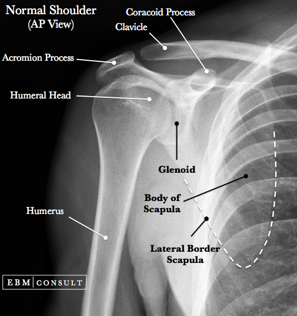
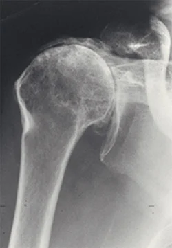
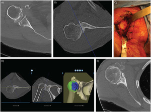
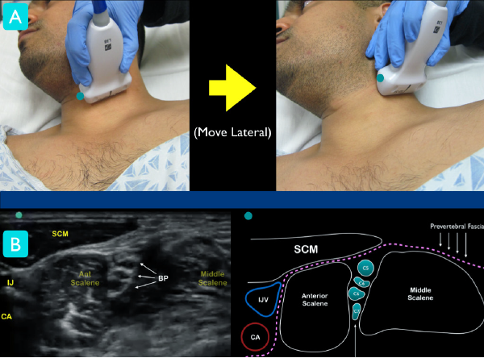
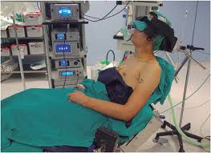
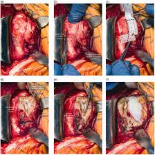
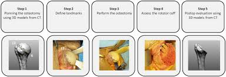
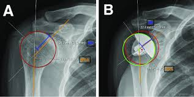
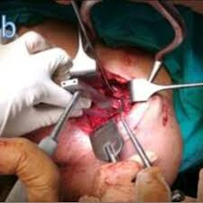
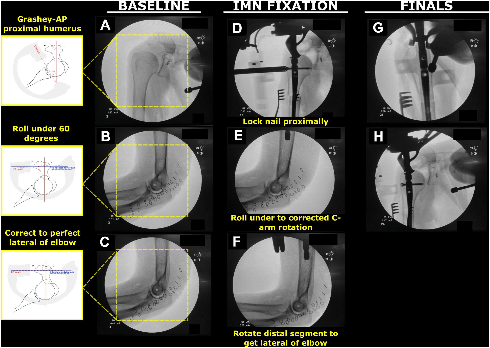

Overview & Indications
Shoulder joint replacement — formally called shoulder arthroplasty — replaces the damaged ball-and-socket of the glenohumeral joint with a precision-engineered metal and polyethylene implant. It is one of the most effective orthopaedic interventions available, delivering dramatic pain relief and restored function to patients whose conservative treatment has failed.
Common Indications
- Severe glenohumeral osteoarthritis (OA)
- Rheumatoid arthritis of the shoulder
- Rotator cuff tear arthropathy
- Complex proximal humerus fractures
- Avascular necrosis (AVN) of the humeral head
- Failed previous shoulder surgery
Types of Implants
- Total Shoulder Arthroplasty (TSA) — ball + socket replaced
- Reverse Total Shoulder (RTSA) — ball & socket swapped; used for cuff tear arthropathy
- Hemiarthroplasty — only the humeral head replaced
- Stemless / Resurfacing — bone-conserving modern option


Pre-operative Evaluation & Imaging
Meticulous pre-operative planning is the foundation of a successful outcome. Dr. Maninder Singh conducts a comprehensive clinical examination combined with advanced imaging before finalising the surgical plan.
Clinical Assessment
- Range of motion & strength testing
- Rotator cuff integrity (clinical & ultrasound)
- Neurovascular status of the limb
- Pain scoring (VAS / ASES shoulder score)
- Patient fitness: cardiac, renal, diabetic workup
Imaging Protocol
- AP, axillary & Grashey X-rays — assess joint space & glenoid version
- CT scan — glenoid morphology, bone stock, version/inclination
- MRI — rotator cuff, labrum, cartilage assessment
- 3D CT templating — virtual implant sizing & placement

Anaesthesia & Pain Management
A carefully coordinated anaesthesia plan ensures patient comfort during surgery and minimises post-operative pain — a key driver of early rehabilitation and faster recovery.
General Anaesthesia (GA)
Maintains unconsciousness and muscle relaxation throughout the 1.5–2.5 hour procedure.
Interscalene Nerve Block
Ultrasound-guided regional block of the brachial plexus at the neck level. Provides 12–18 hours of post-operative analgesia, dramatically reducing opioid requirements.
Multimodal Analgesia Protocol
Pre-op celecoxib + gabapentin, intraoperative ketorolac, post-op paracetamol & ice therapy.

Patient Positioning & Draping in the OT
Correct positioning is critical — it directly affects the surgical approach, instrument access, and implant alignment.

- Patient placed at 45–70° beach-chair position on a radiolucent table
- Head secured in a padded head-holder; neck in neutral alignment
- Medial scapular border must be free off the table edge
- All bony prominences padded to prevent pressure injuries
- Entire arm draped free in a sterile impervious stockinette
- Intraoperative fluoroscopy (C-arm) positioned for real-time X-ray guidance
Surgical Incision — Deltopectoral Approach
The deltopectoral approach is the workhorse exposure for shoulder arthroplasty — an internervous plane between the axillary nerve (deltoid) and the medial pectoral nerve (pectoralis major) that avoids denervating either muscle.
10–15 cm incision from the coracoid process distally along the deltopectoral groove.
The cephalic vein is identified in the groove and carefully retracted laterally with the deltoid to preserve it.
The subscapularis tendon is incised 1 cm medial to its insertion, tagged with heavy sutures for anatomic reattachment at closure.
The anterior joint capsule is released circumferentially to expose the humeral head fully.

Humeral Head Resection
With the joint fully exposed, the damaged humeral head is precisely removed. Accurate resection is critical — it determines the final implant height, version, and shoulder stability.

- Humeral head is delivered out of the wound by external rotation and extension
- A cutting guide is placed at the anatomic neck with 20–30° of retroversion
- An oscillating saw resects the humeral head in a single controlled cut
- The resected head is measured — it templates the correct prosthetic head diameter
- Humeral canal is identified and opened with a box osteotome
- Sequential reamers are used to prepare the intramedullary canal

Pre-operative templating — AP X-ray with measurement overlays (A: baseline, B: planned implant sizing circles and version angles)Glenoid (Socket) Preparation
In Total Shoulder Arthroplasty, the glenoid — the shallow socket of the scapula — is resurfaced and fitted with a component. This is technically the most demanding step of the procedure.
Glenoid Exposure
Posterior retraction of the humerus and complete anterior-inferior capsular release exposes the glenoid face.
Cartilage Removal & Reaming
All remaining cartilage is removed with a curette. A central guide pin is drilled at the correct inclination and version, followed by sequential glenoid reamers to achieve a flat, bleeding bone surface for implant fixation.
Component Fixation
A cemented all-poly or cementless metal-backed glenoid component is impacted / keeled into the prepared surface and fixed with bone cement or pegs.

Humeral Stem & Head Implant Fixation
The humeral prosthesis is assembled and secured. Modern implant systems offer modular heads, allowing fine adjustments to offset, inclination, and height even after stem implantation.

- Trial humeral stem inserted at correct retroversion and height
- Trial head placed — joint is reduced and tension checked
- If sizing is confirmed, the stem is press-fit (cementless) or cemented into the canal
- Modular humeral head (matching diameter of resected head) is impacted onto the morse taper
- For Reverse TSA — baseplate is fixed to glenoid and a metal glenosphere is assembled; a polyethylene humeral cup is attached to the stem
- Intraoperative fluoroscopy used to confirm correct position before reduction
 Total Shoulder Implant
Total Shoulder Implant
 Reverse Shoulder Implant
Reverse Shoulder Implant
Stability Testing & Range-of-Motion Check
Before closing, the surgeon systematically tests the reconstructed joint through its full range of motion to confirm stability and rule out impingement.
Full ROM Test
Passive forward flexion to 150°+, external rotation, and internal rotation are checked. Smooth motion without clunking confirms correct implant sizing.
Translation Test
Anterior, posterior, and inferior translation forces applied. No more than 50% translation of the head on the glenoid is acceptable.
Impingement Check
Arm brought through maximal elevation — no bony or soft-tissue impingement on the acromion or coracoid process.
Intraoperative Fluoroscopy
AP and axillary fluoroscopic images confirm implant alignment, joint reduction, and absence of cement or bone debris.
Wound Closure
Meticulous closure is key to healing, infection prevention, and protection of the tendon repair that will underpin long-term shoulder function.
The subscapularis tendon is repaired through bone tunnels or suture anchors with heavy non-absorbable sutures — anatomic repair is critical for post-op rotation strength.
Deltopectoral interval and deep fascia closed with absorbable 1-0 PDS or Vicryl sutures.
2-0 Vicryl sutures to obliterate dead space and reduce seroma risk.
3-0 Monocryl subcuticular suture for a cosmetic, waterproof skin seal. Wound covered with a waterproof dressing.
A closed-suction drain may be placed for 24 hours in cases with large dead space or anticoagulated patients.

Post-operative Care & Rehabilitation
Surgery is only half the journey. A structured physiotherapy programme is what transforms a well-placed implant into a pain-free, functional shoulder.
- Arm in a broad-arm sling; ice applied for 20 min every 2 hours
- IV antibiotics for 24 hours; transition to oral
- Pendulum (Codman) exercises begin Day 1
- Pain controlled with nerve block + multimodal analgesia
- Post-op X-ray taken Day 1 to confirm implant position
- Sling continued; no active use of the operated arm
- Passive forward elevation to 90° by physiotherapist
- Elbow, wrist, and hand active exercises
- Scar massage from Week 3
- Subscapularis protected — no active internal rotation against resistance
- Sling discontinued; active-assisted range-of-motion exercises
- Gradually increase elevation and external rotation
- Resistive exercises begin for deltoid and periscapular muscles
- X-ray at 6 weeks to confirm stable implant & bone healing
- Progressive strengthening — theraband and light weights
- Functional activities of daily living resumed
- Sports-specific rehab for athletes
- Most patients achieve >90% of contralateral shoulder function
Post-operative X-rays & Outcomes
Radiographic follow-up is performed at Day 1, 6 weeks, 3 months, 1 year, and annually thereafter to monitor implant position, bone remodelling, and detect any early loosening.

AP view showing humeral stem, modular head, and glenoid component in correct position

Note the reversed ball-and-socket geometry — glenosphere on scapula, cup on humerus
Clinical Outcomes at GMCH Amritsar
| Parameter | Pre-operative | 6 Months Post-op | 1 Year Post-op |
|---|---|---|---|
| VAS Pain Score (0–10) | 7–9 | 2–3 | 0–1 |
| Forward Elevation | < 80° | 110–130° | > 140° |
| ASES Shoulder Score | 30–40 | 70–80 | 85–95 |
| Patient Satisfaction | — | 88% | 96% |

Dr. Maninder Singh
Dr. Maninder Singh has performed over 500 shoulder arthroplasties over his career. He is one of the few surgeons in Punjab trained in Reverse Total Shoulder Arthroplasty and complex revision shoulder surgery.
Book a Shoulder ConsultationImage Sources: Selected radiographic and intraoperative images are sourced from Wikimedia Commons under Creative Commons licences. All clinical descriptions represent the practice of Dr. Maninder Singh, GMCH Amritsar.